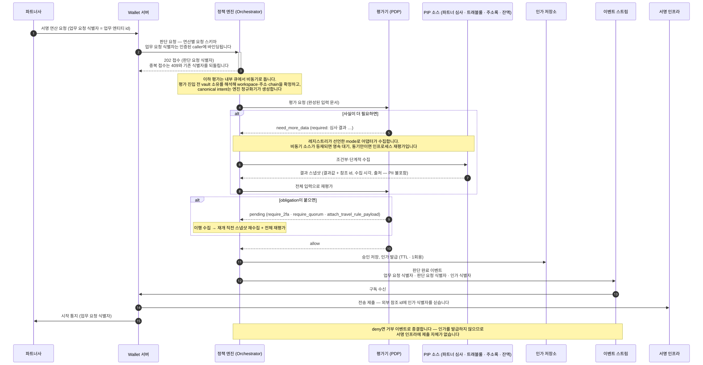
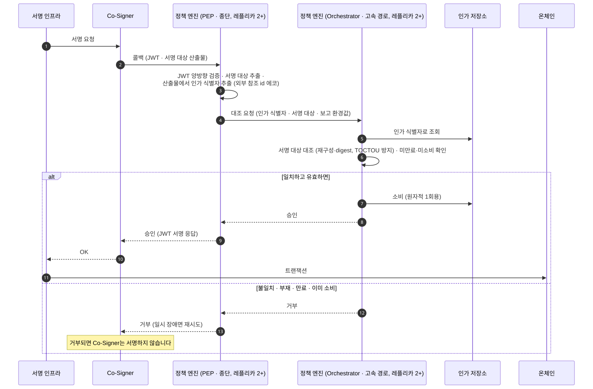

서명 게이트
서명 게이트는 자금을 움직이는 요청이 서명 인프라에 닿기 전에 거치는 2단계입니다. 집금·vault 이체·출금·컨트랙트 호출·구조화 서명이 모두 같은 2단계를 거칩니다.
판단은 요청 시점에, 집행은 서명 직전에 일어납니다. 아래는 그 대표 흐름입니다.
1단계 — 접수하고 평가해서 인가를 발급합니다
다이어그램의 배역은 여덟입니다.
- Orchestrator: 판단 요청을 접수하고 입력 문서를 조립하고 PIP 수집과 obligation 루프를 조율하는 정책 엔진의 앞단입니다. 판정 자체는 하지 않습니다
- 평가기(PDP): 완성된 입력 문서를 평가해 결정을 내는 역할입니다. 밖을 부르지 않습니다
- PIP: 판단에 필요한 사실을 평가 시점에 읽어 오는 수집 경로입니다. Orchestrator 안의 어댑터 계층입니다
- 인가 저장소: 발급된 단회성 인가를 담고 소비를 기록하는 곳입니다
- 이벤트 스트림: 판단 완료 이벤트가 나가는 경로입니다. Wallet 서버가 구독합니다
- 서명 인프라: 키를 보관하고 트랜잭션에 서명하는 뒷단 플랫폼의 서명 부분입니다
- Wallet 서버: 파트너 대상 API를 받아 정책 엔진에 판단을 묻고 서명 인프라에 제출하는 Wallet SDK의 서버 컴포넌트입니다
- 파트너사: Wallet SDK를 도입한 회사, 곧 Workspace 하나입니다

deny면 제출이 없습니다. 정책 위반이 서명 이전에 막힌다는 말의 실체가 이것입니다. 인가가 없으면 Wallet 서버가 서명 인프라를 부르지 않습니다.
접수는 즉시 끝나고 결과는 이벤트로 옵니다
판단 요청은 한 업무 요청을 두고 엔진이 소유하는 판단 기록입니다. 202로 접수만 하고 돌아오며, 평가는 내부 큐에서 처리되고 결과는 이벤트 스트림으로 나갑니다.
같은 업무 요청을 두 번 접수하면 409와 기존 판단 요청 식별자가 돌아옵니다. 새 판단이 생기지 않으므로 재전송이 안전합니다.
파트너사가 받는 것은 시작 통지입니다. 판단 요청 식별자는 내부 전용 값이고, 파트너사는 자기 업무 식별자로 상태를 조회합니다. 그 식별자를 Wallet 서버와 주고받는 내부 계약은 정책 엔진 내부 문서에 있습니다.
2단계 — 서명 직전에 대조합니다
다이어그램에 정책 엔진 쪽 배역 둘이 새로 나옵니다.
- Co-Signer: 서명 인프라 쪽에서 서명 직전에 정책 엔진 콜백으로 승인을 묻는 구성 요소입니다
- PEP: 서명 인프라 콜백을 받아 인가 대조를 Orchestrator에 넘기는 엔드포인트입니다

PEP는 콜백을 받기만 하고 대조는 Orchestrator가 합니다. 콜백을 받아 JWT를 검증하고 서명 대상을 꺼내는 것이 PEP의 일이고, 인가 저장소 대조와 1회용 소비는 Orchestrator가 소유합니다.
재시도는 인프라 일시 오류에만 응답합니다. 승인 사실과 다른 것 — 미존재·만료·이미 소비·불일치 — 은 전부 거부이고, 재시도 횟수를 다 써도 거부입니다.
1단계의 판단과 실제로 서명될 것이 같다는 보장이 없습니다
두 단계 사이에 요청이 바뀌거나 가로채일 수 있습니다. 그 위험 구간을 없애는 것이 2단계입니다.
그래서 2단계는 서명 대상 산출물을 재구성해 1단계의 판단과 대조합니다. 인가 식별자는 조회 힌트일 뿐이고, 실제 검증은 서명 대상 전체 대조입니다.
인가는 1회용입니다. 대조를 통과하면 그 즉시 원자적으로 소비되어, 같은 인가로 두 번 서명할 수 없습니다.
콜백 경로는 밖으로 나가지 않습니다
2단계 경로에서는 외부 시스템을 호출하지 않습니다. 응답이 늦으면 서명 인프라가 재시도하지 않고 서명 요청을 취소하기 때문입니다.
파트너사 심사 결과도 이 경로에서 묻지 않습니다. 자금세탁방지·이상거래 탐지 같은 외부 사실은 1단계 평가 시점에 PIP로 수집합니다.
그래서 이 경로의 참여자는 레플리카를 둘 이상 띄우고 롤링 배포합니다.
인가에는 유효 시간이 있습니다
단회성 인가는 승인된 판단 요청이 발급하는 한 번만 쓸 수 있는 서명 근거입니다. 그 인가 TTL의 상한은 3600초(60분), 기본값은 1200초(20분)입니다. 기본값이 하한을 겸하는 이유는 결정과 결합에 있습니다.
정책을 새로 배포해도 이미 발급된 인가를 무효화하지 않습니다. 구정책 승인은 TTL까지 유효합니다.
이 노출 창은 TTL 상한으로 묶인 의도된 트레이드오프입니다. 배포마다 진행 중인 정상 출금을 실패시키지 않기 위해서입니다.